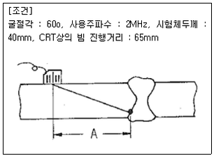
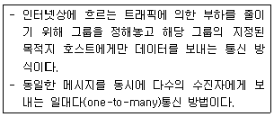

초음파비파괴검사기사(구) (2009-03-01 기출문제)
1과목: 초음파탐상시험원리
1. 전자기 초음파탐상시험(Electro-Magnetic Acoustic Transducer ;EMAT) 방법의 특징이 아닌 것은?
- 비접촉 비파괴탐상시험이 가능하다.
- 표층부의 광대역 장거리 탐상이 가능하다.
- 탐상면의 거칠기에 영향을 받지 않는다.
- 압전효과에 의해 초음파는 발생되고 수신된다.
(정답률: 알수없음)

2. 다음 중 초음파 감쇠의 원인이 아닌 것은?
- 흡수
- 산란
- 빔확산
- 굴절
(정답률: 알수없음)
3. 초음파탐상시험에서 초음파의 주파수가 높을수록 빔의 분산각은 어떻게 변화되는가? (단, 진동자의 직경은 동일하다.)
- 감소한다.
- 변화하지 않는다.
- 증가한다.
- 일정하게 증가하다가 변화하지 않는다.
(정답률: 알수없음)
4. 다음 중 압전효과가 나타자니 않는 물질은?
- 황산리튬
- 티탄산바륨
- 수정
- A-니켈
(정답률: 알수없음)
5. 직경 8mm, 주파수 4MHz 인 탐촉자로 강을 초음파탐상 시험할 때, 근거리음장의 길이는 약 몇mm인가? (단, 강의 종파속도는 5900m/s이다.)
- 1,8mm
- 5.4mm
- 10.8mm
- 15.4mm
(정답률: 알수없음)
6. 긴 종방향 결함이 존재하는 봉재를 단면으로부터 수직탐상하는 경우에 대한 설명으로 옳은 것은?
- 저면에코가 현저히 저하된다.
- 송신펄스와 제 1저면 에코사이에 결함의 위치를 정확히 결정할 수 있는 에코가 나타난다.
- 굴절한 초음파에 의해 에코높이가 나타난다.
- 전체적으로 잡음에코가 나타난다.
(정답률: 알수없음)
7. 헬륨질량분석 진공시스템 내부표면의 불순물 등에 흡수되어 있던 가스가 천천히 방출되면서 나타나는 허위누설을 무엇이라 하는가?
- 안개현상(Fog up)
- 가스유출(Out gassing)
- 장애현상(Hang up)
- 흐름신호(Flow Signal)
(정답률: 알수없음)
8. 다음 중 발포누설시험법(Bubble Test)의 장점이 아닌 것은?
- 큰 누설을 쉽게 찾음.
- 누설부위를 직접 검출 가능
- 시험이 간단하고 비용이 저렴
- 시험방법 중 작은 결함에 대한 감도가 가장 우수
(정답률: 알수없음)
9. 다음 비파괴검사법 중 발생 중인 결함의 검출에 가장 효과적인 시험법은?
- 음향방출시험
- 초음파탐상시험
- 와전류탐상시험
- 중성자투과시험
(정답률: 알수없음)
10. 다음 중 초음파탐상시험에서 두꺼운 판의 용입부족을 검출하는데 가장 좋은 방법은?
- 평행 주사.
- 지그재그 주사
- 탠덤(tandem)주사
- 오비탈(orbital)주사
(정답률: 알수없음)
11. 다음 중 비파괴검사의 종류와 그 특성을 연결한 것으로 틀린것은?
- 음향방출시험 - 동적결함검사
- 와전류탐상시험 - 전도체의 표면검사
- 전자초음파공명법 - 고온재료의 접촉검사
- 핵자기공명 단층영상법 - 수소원자핵의 분포를 영상화
(정답률: 알수없음)
12. 다음 중 납 용기나 철 케이스 내에 들어있는 물질의 양을 검사하는데 효과적인 비파괴검사법은?
- 누설검사
- 침투탐상시험
- 초음파탐상시험
- 중성자투과시험
(정답률: 알수없음)
13. 다음 중 침투탐상제를 이용한 누설시험에서 침투탐상시험과는 달리 포함되지 않아도 되는 절차는?
- 전처리
- 침투처리
- 세척처리
- 현상처리
(정답률: 알수없음)
14. 방사선투과시험에서 사진처리작업 중 정착얼룩과 정착액의 성능저하를 방지하기 위해 처리하는 작업은?
- 현상처리
- 정지처리
- 정착처리
- 수세처리
(정답률: 알수없음)
15. 결함의 종류에 따른 비파괴시험 방법을 열거한 것으로 적절하지 않은 것은?
- 언더컷의 검출은 방사선투과시험
- 내부기공의 검출은 자분탐상시험
- 변형은 게이지를 이용한 육안검사
- 표면에 개방된 균열의 검출은 침투탐상시험
(정답률: 알수없음)
16. 와전류탐상시험에서 프로브형 탐촉자로 평판 형태의 시험편을 검사할 때, 시험편의 표면과 코일 사이의 간격이 변화하면 와전류 신호가 발생한다. 이러한 현상을 정의하는 용어는?
- 충전율(fill factor)
- 리프트 오프(lift off)
- 위상분별(Phase anlaysis)
- 모서리효과(edge effect)
(정답률: 알수없음)
17. 비자성체의 포면 및 표면직하 결함을 표면 개구 여부에 관계없이 검출하고자 할 때 다음 중 어느 방법이 가장 적합한가?
- 자분탐상시험
- 침투탐상시험
- 음향방출시험
- 와전류탐상시험
(정답률: 알수없음)
18. 다음 비파괴검사법 중 알루미늄합금에 대한 결함 검출 감도가 가장 나쁜 것은?
- 방사선투과시험
- 초음파탐상시험
- 자분탐상시험
- 침투탐상시험
(정답률: 알수없음)
19. 다음 중 방사선투과시험의 장점이 아닌 것은?
- 내부결함의 검출이 가능하다.
- 물질의 큰 조성 변화 검출이 가능하다.
- 검사결과를 영구적으로 기록할 수 있다.
- 방사선빔 방향에 평행한 판형결함의 검출이 용이하다.
(정답률: 알수없음)
20. 다음 중 방사선투과시험과 비교한 초음파탐상시험의 장점이 아닌 것은?
- 시험체 두께에 대한 영향이 적다.
- 미세한 균열성 결함의 검사에 유리하다.
- 결함의 형태와 종류를 쉽게 알 수 있다.
- 한쪽 면에서만 접근할 수 있어도 탐상이 가능하다.
(정답률: 알수없음)
2과목: 초음파탐상검사
21. 초음파탐상검사에서 적산효과에 대한 설명으로 틀린 것은?
- 결함 에코의1회 반사파보다 2회 또는 3회 반사파가 높은 강도를 나타내는 경우를 말한다.
- 작은 결함이 시험체 중앙에 존재할 때 나타나기 쉽다.
- 주로 시험체 두께가 얇고 저면 반사 횟수가 많을 때 나타난다.
- 결함을 평가할 때에는 에코의 평균 강도를 기준으로 한다.
(정답률: 알수없음)
22. 같은 크기의 결함이 있을 때 초음파 탐상검사로 가장 발견하기 쉬운 결함은?
- 구형의 공동
- 이물질의 개재
- 초음파 진행방향과 평행인 균열
- 초음파 진행방향과 수직인 균열
(정답률: 알수없음)
23. 경사각탐상시 인공대비 반사원으로 측면 드릴구멍(SDH)을 이용하는 이유는?
- 면적진폭을 교정하기 위하여
- 판재의 두께를 교정하기 위하여
- 횡파의 거리진폭을 교정하기 위하여
- 탐촉자의 근거리 분해능을 결정하기 위하여
(정답률: 알수없음)
24. 시험체 탐상면의 거칠기로 인해 감도와 분해능이 저하될 때 이를 개선하는 방법으로 가장 적합한 것은?
- 탐상기의 증폭기를 낮추어 사용한다.
- 고주파수 탐촉자를 사용한다.
- 초음파 출력이 높은 탐촉자를 사용한다.
- 산란파를 억제하기 위해 주사면 근처에 금속판을 놓아 사용한다.
(정답률: 알수없음)
25. 펄스에코 초음파탐상검사법에서 신호를 전개하는 방식에 대하여 옳은 설명은?
- A-Scan 법은 자료를 주로 음극선관(오실로스코프)에 전재한다.
- B-Scan법은 정면도(Planview)로 신호를 전개한다.
- C-Scan법은 단면도(Cross Section)로 신호를 전개한다.
- D-Scan법은 자료를 X-Y plotter로 기록한다.
(정답률: 알수없음)
26. 그람과 같이 용접부를 경사각 탐촉자로 검사하여 결함을 검출하였다. 탐촉자 -결함거리 A는 약 얼마인가?

- 32.5mm
- 34.6mm
- 56.3m
- 60.0mm
(정답률: 알수없음)
27. 루사이트 슈(Lucite Shoe)가 부착된 탐촉자의 장점이 아닌 것은?
- 진동자의 마모를 방지해 준다.
- 곡면체에서도 검사가 가능하다.
- 분해능과 감도가 증가한다.
- 경사각 초음파탐상검사가 가능하다.
(정답률: 알수없음)
28. 경사각탐상에서 2개의 탐축자를 사용하는 주사방법은?
- 투과주사
- 진자주사
- 지그재그주사
- 목돌림주사
(정답률: 알수없음)
29. 초음파탐상장치에서 스크린상에 결함에코 높이가 20%에 위치하고 저면에코 높이가 50%에 나타났다. 임상에코가 많아 리젝션(rejection)을 조정하였더니 저면에코 높이가 25%로 조정되었다. 결함에코의 높이는 어떻게 되는가?
- 나타나지 않는다.
- 10%에 나타난다.
- 20%에 나타난다.
- 25%에 나타난다.
(정답률: 알수없음)
30. RB-4형 시험편 시리즈(No.1~No.7)에서 표준구멍의 위치가 두께의 1/2 지점에 위치하는 시험편은?
- RB-4형 No.1
- RB-4형 No.3
- RB-4형 No.5
- RB-4형 No.7
(정답률: 알수없음)
31. 용접부를 경사각탐상할 경우 측정범위를 정확하게 조정해야만 되는 이유로 틀린 것은?
- 결함의 패턴을 추정하기 위해서
- 결함의 위치를 추정하기 위해서
- 결함의 크기를 추정하기 위해서
- 결함의 길이를 추정하기 위해서
(정답률: 알수없음)
32. 섬유강화 플라스틱과 같은 복합재료에 대한 초음파탐상검사를 할 때 특별히 고려해야할 사항은?
- 섬유방향에 따른 이방성
- 재료 내에서의 감쇠
- 시험체의 전기전도도
- 시험체의 밀도
(정답률: 알수없음)
33. 다음 중 일반적인 강재용접부의 내부 융합부(모재와 용융물)에 존재하는 불연속을 검출하는데 가장 이상적인 초음파탐상검사는?
- 판파를 이용한 수침법으로 시험
- 판파를 이용한 수직접촉법으로 시험
- 횡파를 이용한 전물수침법으로 시험
- 횡파를 이용한 경사각탐상법으로 시험
(정답률: 알수없음)
34. 경납땜 이음부(Brazed joint)의 초음파탐상검사에 관한 설명으로 옳지 않은 것은?
- 일반적으로 경사각탐상으로 검사한다.
- 일반적으로 겹침(Lamination)탐상과 동일한 방법으로 검사한다.
- 접착이 잘 되어있더라도 접착부위에서 에코가 발생할 수 있다.
- 두께가 얇은 경우에는 다중 에코법으로 검사할 수 있다.
(정답률: 알수없음)
35. 접촉매질에 대한 설명으로 옳지 않은 것은?
- 수침법의 경우를 제외하고 물은 접촉매질로 사용할 수 없다.
- 직접접촉법에서 글리세린은 양호한 접촉매질이다.
- 탐상조건에 따라 접촉매질로 기계유를 사용해도 된다.
- 접촉매질 선정시에는 시험체의 온도를 고려하여야 한다.
(정답률: 알수없음)
36. 다음 중 초음파가 철강 내부에서 철강과 공기의 계면에 경사각으로 입사시 나타나는 현상을 설명한 것으로 틀린 것은?
- 종파의 반사음압은 입사각이 68o일 때 최소치가 되어 거의 87%가 횡파로 변환된다.
- 입사하는 횡파의 굴절각이 30°가 되면 횡파의 반사음압은 대부분 종파로 변환된다.
- 횡파 입사 시 입사각이 33.2°이상이면 횡파는 전부 반사되어 파형변환은 없다.
- 종파가 1차 임계각 이상에서 입사시 횡파를 거치지 않고 표면파로 파형변환이 일어난다.
(정답률: 알수없음)
37. 초음파가 결함과의 각도가 얼마일 때 최대 에코를 얻을 수 있는가?
- 30°
- 45°
- 60°
- 90°
(정답률: 알수없음)
38. Miniature Block(IIW-2형)을 이용하여 60°의 경사각 탐촉자로 거리보정을 실시하려고 한다. 탐촉자를 반지름 50mm 원주면을 향하여 초음파를 입사했을 때 스크린에 나타나는 반사 에코가 아닌 것은?
- 거리 50mm 반사 에코
- 거리 100mm 반사에코
- 거리 125mm 반사에코
- 거리 200mm 반사에코
(정답률: 알수없음)
39. 용접부의 두께가 작고 용접비드의 폭이 넓어 직사법에 의한 탐상이 불가능한 경우가 발생하였다. 조치사항으로 틀린 것은?
- 방사선투과검사 등 다른 방법으로 검사한다.
- 불가피한 경우이므로 1회 반사법으로만 검사한다.
- 용접부를 평평하게 그라인딩한 후 수직탐상도 병용한다.
- 책임기술자에게 보고한 후 지시에 따른다.
(정답률: 알수없음)
40. 리젝션(Rejection)을 사용하면 일어나는 현상을 가장 옳게 나타낸 것은?
- 기준선으로부터 노이즈 시그널만 제거한다
- 장비의 증폭직선성에만 영향을 미친다.
- 기준선으로부터 노이즈 시그널을 제거하고 장비의 증폭직선성에 영향을 미친다.
- 시간축 직선성이 좋아진다.
(정답률: 알수없음)
3과목: 초음파탐상관련규격및컴퓨터활용
41. 강 용접부의 초음파탐상 시험방법(KS B 0896) 에 따라 탠덤 탐상하는 경우, 탐상장치의 조정 및 점검시기는?
- 작업시간 4시간 이내마다
- 작업시간 6시간 이내마다
- 작업시간 8시간 이내마다
- 작업시간 1주일 이내마다
(정답률: 알수없음)
42. 보일러 및 압력용기의 재료에 대한 초음파비파괴검사(ASME Sec.V, Art.5)에서 교정시험편은 시험할 주조품 두께의 몇 %의 두께를 갖는 것으로 제작되어야 하는가?
- ±10
- ±15
- ±25
- ±30
(정답률: 알수없음)
43. 건축용 강판 및 평강의 초음파탐상시험에 따른 등급븐류와 판정기준(KS D 0040)에서 시험체의 두께 40mm 인 경우 수직 탐촉자로 탐상할 때 진동자의 유효지름과 공칭 주파수로 옳은 것은?
- 주파수 : 5MHz, 지름 : 20mm
- 주파수 : 4MHz, 지름 : 20mm
- 주파수 : 5MHz, 지름 : 30mm
- 주파수 : 4MHz, 지름 : 30mm
(정답률: 알수없음)
44. 보일러 및 압력용기에 대한 초음파 탐상검사(ASME Sec.V Art.23 SA-388)에서 오스테나이트 스테인리스 재료를 탐상할 때, 초음파 탐상기의 주파수는 몇 ㎒이하의 성능을 갖추어 사용할 수 있어야 하는가?
- 0.1㎒ 이하
- 0.4㎒ 이하
- 1㎒ 이하
- 2㎒ 이하
(정답률: 알수없음)
45. 보일러 및 압력용기에 대한 초음파 탐상검사(ASME Sec.V Art.4)에 의거 탐상할 때 탐촉자의 주사속도는 다음 중 어느 속도 이상을 초과하지 않아야 하는가?
- 약 100mm/s
- 약 150mm/s
- 약 200mm/s
- 약 250mm/s
(정답률: 알수없음)
46. 알루미늄 관 용접부의 초음파 경사각탐상 시험방법(KS B ⑤21)에 의한 탐상방법 및 시험결과의 분류방법에 대한 설명으로 틀린 것은?
- 흠을 평가하기 위한 레벨 중 A평가 레벨은 에코 높이의 레벨을 “HAL(기준레벨)-12dB” 로 한다.
- 흠 에코 높이의 레벨이 A평가 레벨을 넘는 것은 “C종 흠” 으로 판정한다.
- 동일한 흠으로 간주하는 것은 흠과 흠 간격이 큰 쪽 흠 지시길이보다 짧을 경우 깊이가 동일하다고 간주할 때에 적용한다.
- 인접 흠을 동일한 흠으로 간주할 경우 간격도 포함시켜 연속한 흠으로 취급한다.
(정답률: 알수없음)
47. 강용접부의 초음파탐상 시험방법(KS B 0896)의 부속서2(원둘레이음 용접부의 탐상방법)에 따라 두께가 15mm, 직경이 200mm인 강관의 원둘레이음 용접부를 탐상하려 한다. 다음 설명 중 틀린 것은?
- 탐촉자의 탐촉면은 평면으로 한다.
- 탐상감도의 조정은 RB-A8 또는 RB-A6을 사용한다.
- 살두께가 19mm인 대비시험편을 사용할 수 있다.
- 감도보정은 원칙적으로 하지 않는다.
(정답률: 알수없음)
48. 보일러 및 압력용기의 재료에 대한 초음파비파괴검사(ASME Sec.V, Art5)에 따라 주조품(Casting)을 탐상검사할 때 수직탐촉자를 사용하고, 특수한 경우에는 경사각탐촉자를 추가로 사용하였다. 특수한 경우에 대한 내용으로 가장 적절한 것은?
- 주조품의 재질이 알루미늄일 경우
- 사용주파수가 0.5MHz 일 때.
- 주조품의 전면과 후면과의 각도가 15°를 넘을 때
- 자동 DAC 장치를 사용할 때.
(정답률: 알수없음)
49. 보일러 및 압력용기의 재료에 대한 초음파비파괴검사(ASME Sec.V, Ar4)에서 직접 접촉법 사용시 교정시험편 표면과 시험표면 사이의 온도치는 얼마ㄲㆍ지 허용하고 있는가?
- 10˚F
- 25˚F
- 35˚F
- 40˚F
(정답률: 알수없음)
50. 보일러 및 압력용기의 재료에 대한 초음파비파괴검사(ASME Sec.V, Ar4)에 따라 증폭직선성을 측정할 때 스크린의 80% 높이의 에코를 6dB 내렸을 때 지시 한계의 허용범위는?
- 16∼24%
- 32∼48%
- 40∼60%
- 68∼88%
(정답률: 알수없음)
51. 보일러 및 압력용기에 대한 표준초음파탐상검사(ASME Sec. V, Art 4)의 일반적인 시험요건 중 진동자 치수의 최소 중접 면적은?
- 5%
- 10%
- 15%
- 20%
(정답률: 알수없음)
52. 압력용기용 강판의 초음파탐상 검사방법(KS D 0233)에 따른 압력용기용 강판의 초음파탐상검사에 이진동자수직탐촉자를 사용할 때 대비 시험편은?
- RB-A4
- RB-C
- RB-D
- RB-E
(정답률: 알수없음)
53. 건축용 강판 및 평강의 초음파탐상시험(KS D 0040)에 따라 시험체의 두께가 60mm를 넘을 때 다음 중 사용할 수 있는 탐촉자는?
- N2Q20N
- B2M10*10A45
- N5Q10*10A70
- N4Q20ND
(정답률: 알수없음)
54. 강용접부의 초음파탐상 시험방법(KS B 0896)에 따른 경사각탐촉자의 입사점, 굴절각 및 불감대 측정의 점검주기로 옳은 것은?
- 입사점과 굴절각은 작업개시 및 4시간마다, 불감대는 작업 개시마다
- 입사점과 굴절각은 작업개시 및 4시간마다, 불감대는 구입 시 혹은 보수를 한 직후
- 입사점과 굴절각은 작업개시 및 8시간마다, 불감대는 작업 개시마다
- 입사점과 굴절각은 작업개시 및 8시간마다, 불감대는 구입 시 혹은 보수를 한 직 후
(정답률: 알수없음)
55. 보일러 및 압력용기에 대한 표준초음파탐상검사(ASME. Sec V, Art.23 SB-548)에서 알루미늄 합금판에 대한 검사 후 합격된 제품에는 어떤 글자의 도장을 찍는가?
- A
- P
- U
- O
(정답률: 알수없음)
56. 다음 중 컴퓨터 운영체제에 대한 설명으로 틀린 것은?
- 하드웨어와 응용프로그램간의 인터페이스 역할을 한다.
- CPU, 주기억장치, 입출력장치 등의 컴퓨터 자원을 관리한다.
- 컴퓨터 시스템의 전반적인 동작을 제어하는 시스템프로그램의 집합이다.
- 사용자가 작성한 원시프로그램을 기계어로 된 목적프로그램으로 변환한다.
(정답률: 알수없음)
57. 다음 중 인터넷상에서 정보와 의견을 교환하기 위한 토론 그룹은?
- 고퍼
- 아키
- 텔넷
- 유즈넷
(정답률: 알수없음)
58. 해커가 해킹을 하여 사용자 권한을 얻어낸 후, 시스템 관리자의 권한을 훔치고, 이후 자신이 다음에 재침입할 것을 대비하여 만들어 놓고 나가는 프로그램을 무엇이라 하는가?
- 웜
- 스파이웨어
- 애드웨어
- 백도어
(정답률: 알수없음)
59. 다음이 설명하고 있는 통신 방식은?

- 멀티캐스트
- 유니캐스트
- 애니캐스트
- 라우팅
(정답률: 알수없음)
60. 다음은 국가를 나타내는 도메인들이다. 영국에 해당하는 도메인 명은?
- au
- ca
- uk
- fr
(정답률: 알수없음)
4과목: 금속재료학
61. 100배로 확대된 다결정 금속재료의 내부조직 사진에서 평방 인치당 결정립자의 수가 64개일 때 이 금속재료의 ASTM 결정입도는?
- 3
- 5
- 7
- 9
(정답률: 알수없음)
62. 공정형 상태도를 나타내는 대표적인 합금은?
- Cu-Ni
- Au-Ag
- Al-Si
- Cd-Hg
(정답률: 알수없음)
63. 고강도 알루미늄계 합금에서 두랄루민과 초초두랄루민계는 어느 계통의 합금인가?
- Al-Cu-Mg 계, Al-Zn-Mg 계
- Al-Fe-Mn 계, Al-Si-Mg 계
- Al-Mn-Co 계, Al-Mn-Sn 계
- Al-Mg-Sn 계, Al-Cu-Ni 계
(정답률: 알수없음)
64. Cr계 스테인리스 강의 취성애 대한 설명 중 틀린 것은?
- 고온취성은 700℃부근에서 나타난다.
- 저온취성은 페리읕 강에서 나타난다.
- 475℃취성은 크롬 15%이상의 스테인리스강에서 375~540℃로 장시간 가열하면 나타난다.
- σ취성은 800℃ 이상에서 가열하여 급냉하면 인성을 회복한다.
(정답률: 알수없음)
65. 다음 중 Pb이 포함된 베어링 합금이 아닌 것은?
- Kelmet
- White metal
- Bahnmetal
- Monel Metal
(정답률: 알수없음)
66. 다음 중 구상흑연 주철에 대한 설명으로 옳은 것은?
- 인장강도는 20Kgf/mm2이하이다.
- 주조상태에서 흑연이 구상으로 정출한다.
- 피로한도는 회주철에 비해 1.5~2.0배 낮다.
- 구상흑연주철의 기지조직은 페라이트만 존재한다.
(정답률: 알수없음)
67. 일반적으로 상용한도가 300℃까지 사용할 수 있는 열전대는?
- Pt-Pt·Rh
- Cu-constantna
- Chromel - Alumel
- Fe - Constantan
(정답률: 알수없음)
68. Hadfield 강에 대한 설명으로 틀린 것은?
- 오스테나이트 조직을 가진 강이다.
- 고온에서 선애하면 결정립계에서 M3C가 석출한다.
- 고온에서 서냉하면 오스테나이트가 마텐자이트로 변태한다.
- 열전도성이 좋으며, 팽창계수도 작아 열변형이 없다.
(정답률: 알수없음)
69. 기계적 강도, 열적 특성 및 내식성 등을 충분히 향상시켜 하중을 지탱하고 열 등에 견뎌야 하는 구조물 또는 그 부품에 사용하는 파인 세라믹스는?
- 바이오 세라믹스(bio ceramics)
- 엔지니어링 세라믹스(engineering ceramics)
- 일렉트로닉 세라믹스(electronic ceramics)
- 트레디셔널 세라믹스(traditional ceramics)
(정답률: 알수없음)
70. β-Sn 이 α-Sn 으로 변태하는 이론적인 온도는 약 몇 ℃인가?
- 13
- 55
- 100
- 150
(정답률: 알수없음)
71. 다음 초경합금 분말을 혼합 제조할 때 가열온도가 가장 높은 조건은?
- Ti + C
- TiO2 + C
- W + TiO2 + C
- WC + TiO2 + C
(정답률: 알수없음)
72. 다음 중 Ni- Fe 합금이 아닌 것은?
- Nicalloy
- Permalloy
- Platinite
- Elektron
(정답률: 알수없음)
73. 로크웰 경도시험에서 가장 큰 하중을 사용하는 스케일은 무엇인가?
- A
- B
- C
- 15N
(정답률: 알수없음)
74. 특수강 중에 각종 원소의 첨가 효과를 설명한 것으로 틀린것은?
- Ni 는 탄소와의 친화력이 낮고, 페라이트에 고용된다.
- Cr 은 소입성을 개선하는 효과가 Ni보다 우수하다.
- Mo를 첨가한 Mo강은 400℃부근까지 고온강도를 개선한다.
- Mn의 처마량이 1.0%이상이 되면 결정입자를 미세하게 하고 취성을 방지한다.
(정답률: 알수없음)
75. 다음 동합금에 대한 설명으로 틀린 것은?
- Cu - Be합금은 분산강화형 합금이다.
- 60%Cu-40%Zn합금은 Munts metal 이라 하고 α상과 β상을 포함한 2중 조직을 하고 있다.
- 탄피황동을 부식분위기에 놓았을 때 발생하는 응력부식균열을 season cracking 이라 한다.
- 70%Cu-30%Zn 합금은 탄피황동(Cartridge brass)으로 불리며 강도와 연성이 우수하다.
(정답률: 알수없음)
76. 구리에 함유된 불순물 중 전기 전도도에 가장 악영향을 미치는 원소는?
- Ti
- Pb
- Mn
- Au
(정답률: 알수없음)
77. 다음 중 주철의 성장을 방지하는 방법으로 틀린 것은?
- C 및 Si 양을 적게한다.
- 구상흑연을 편상화시킨다.
- 흑연의 미세화로 조직을 치밀하게 한다.
- Cr, Mo, V 등을 첨가하여 펄라이트 중의 Fe3C의 분해를 막는다.
(정답률: 알수없음)
78. Mg 금속에 대한 설명으로 틀린 것은?
- 비중이 약 1.7정도이다.
- 알루미늄보다 쉽게 무식한다.
- 면심입방격자(FCC) 구조를 갖는다.
- Zr의 첨가로 결정립이 미세하고, 희토류원소의 첨가로 고온 크리프 특성이 우수하다.
(정답률: 알수없음)
79. 다음 중 강제적으로 완전 탈산시킨 강은?
- Killed 강
- Rimmed 강
- Capped 강
- Semi-killed 강
(정답률: 알수없음)
80. 금속의 회복(recovery)에 대한 설명 중 틀린 것은?
- 결정내부의 변형에너지가 감소하는 현상이다.
- 전기저항은 회복의 과정에서 서서히 증가하는 현상이다.
- 결정 내부의 항복강도가 감소하는 현상이다.
- 전위의 일부가 소멸되거나 또는 재배열되는 현상이다.
(정답률: 알수없음)
5과목: 용접일반
81. 연강용 피복 아크 용접봉 종류 중 E4311의 피복제 계통은?
- 일루미나이트계
- 라임티타니아계
- 철분산화철계
- 고셀룰로오스계
(정답률: 알수없음)
82. 용접법의 분류에서 저항 용접에 해당하는 것은?
- 심 용접
- 테르밋 용접
- 스터드 용접
- 경납 땜
(정답률: 알수없음)
83. 용접부에 잔류응력이 생길 때의 처리 방법으로 가장 적합한 것은?
- 풀림을 한다.
- 뜨임을 한다.
- 불림을 한다.
- 담금질을 한다.
(정답률: 알수없음)
84. 연강용 피복금속 아크용접봉에 E4313이라고 적혀있다면 용착금속의 최소 인장강도는 몇 N/mm2이상 인가?
- 420
- 300
- 130
- 110
(정답률: 알수없음)
85. 아크 쏠림(Arc blow) 의 방지대책으로 틀린 것은?
- 직류용접을 피하고 교류용접을 사용한다.
- 용접봉 끝을 아크 쏠림의 반대편으로 향하게 한다.
- 긴 용접에서는 후퇴법(Back step)으로 용접한다.
- 접지점은 가능한 한 용접부에 가까이 접지한다.
(정답률: 알수없음)
86. 피복 아크용접에서의 아크 길이와 아크 전압과의 관계 설명으로 가장 적합한 것은?
- 아크 길이가 길어져도 아크 전압은 일정하다.
- 아크 길이가 길어지면 아크 전압은 증가한다.
- 아크 길이가 짧아지면 아크 전압은 증가한다.
- 아크 길이와 아크 전압은 서로 관계가 없다.
(정답률: 알수없음)
87. 세로비드 노치 굽힘시험 방법으로 시험편의 표면에 세로길이로 비드 용접하여 이에 직각으로 V노치를 붙인 시험편을 구부리는 방법의 연성시험법은?
- 킨젤 시험
- 슈나트 시험
- 카안인열 시험
- 피스코 균열 시험
(정답률: 알수없음)
88. 산소-아세탈린 불꽃의 종류가 아닌 것은?
- 중성 불꽃
- 산화 불꽃
- 탄화 불꽃
- 완성 불꽃
(정답률: 알수없음)
89. 이음 형상에 따른 심 용접기의 종류가 아닌 것은?
- 횡 심 용접기
- 만능 심 용접기
- 종 심 용접기
- 인터랙 심 용접기
(정답률: 알수없음)
90. 서브머지드 아크 용접에서 와이어의 적당한 돌출길이는 와이어 지름의 몇 배 전후로 하는 것이 적당한다?
- 2
- 4
- 6
- 8
(정답률: 알수없음)
91. 아크전류가 180A, 아크전압이 15V, 용접속도가 18cm/min일 때, 용접길이 1cm당 용접입열은 몇 Joule/cm인가?
- 9000
- 12960
- 18000
- 48600
(정답률: 알수없음)
92. 기공 또는 용융금속이 튀는 현상이 발생한 결과, 용접부 바깥면에서 나타나는 작고 오목한 구멍을 뜻하는 용어는?
- 피트(pit)
- 크레이터(crater)
- 흠(groove)
- 스패터(spatter)
(정답률: 알수없음)
93. 제품의 한쪽 또는 양쪽에 다수의 돌기를 만들어 이 부분에 용접전류를 집중시켜 접합하는 용접방법은?
- 점 용접
- 시임 용접
- 프로젝션 용접
- 업셋 용접
(정답률: 알수없음)
94. 교류용접기와 비교한 직류 용접기의 일반적인 특징 설명으로 틀린 것은?
- 구조가 간단하고 유지 관리가 쉽다.
- 아크의 안정성이 우수하다.
- 전격의 위험이 적다.
- 역률이 매우 양호하다.
(정답률: 알수없음)
95. 용접봉의 용융속도에 관한 설명 중 틀린 것은?
- 단위 시간당 소비되는 용접봉의 길이로 나타낸다.
- 용융속도는 아크 전압과 관계가 있고 아크 전류와는 무관하다.
- 동일 종류의 용접봉인 경우 심선의 용융속도는 전류에 비례한다.
- 동일 종류의 용접봉인 경우 심선의 용융속도는 용접봉의 지름에 관계가 없다.
(정답률: 알수없음)
96. 불활성 가스 텅스텐 아크 용접에서 사용되는 텅스텐 전극 중 스테인리스강의 용접에 적당한 것은?
- 순 텅스텐 전극봉
- 토륨 텅스텐 전극봉
- 바륨 텅스텐 전극봉
- 지르코늄 텅스텐 전극봉
(정답률: 알수없음)
97. 용접작업시 수축량에 미치는 용접시공 조건의 영향에 대한 설명 중 틀린 것은?
- 루트 간격이 클수록 수축이 크다.
- 구속도가 크면 수축이 작다.
- 피복제의 종류에 따라 차이가 크다.
- 피닝을 하면 수축이 감소한다.
(정답률: 알수없음)
98. 겹치기이음, T이음, 모서리이음에 있어서 거의 직교하는 두 면을 결합하는 3각형 단면의 융착부를 갖는 용접은?
- 맞대기 용접
- 필릿 용접
- 플러그 용접
- 비드 용접
(정답률: 알수없음)
99. 서브머지드 아크용접에서 2개의 전극 와이어를 독립된 전원(교류 또는 직류)에 접속하여 용접선에 따라 전극의 간격을 10 ~ 30mm정도로 하여 2개의 전극 와이어를 동시에 녹게 함으로써 한꺼번에 많은 양의 용착금속을 얻을 수 있는 용접법은?
- 횡 병렬식
- 탠덤식
- 횡 직렬식
- 스크래치식
(정답률: 알수없음)
100. 용접 결함의 분류 중에서 치수상 결함에 해당하는 것은?
- 스트레인 변형
- 용접부 융합불량
- 기공
- 용접부 접합불량
(정답률: 알수없음)